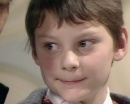
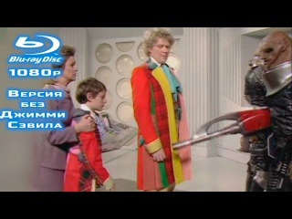
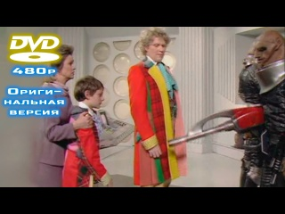
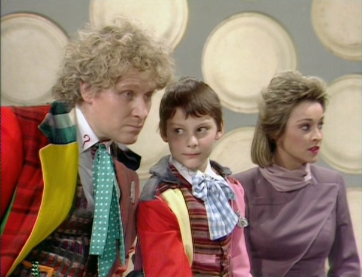

гость
Субтитры: Русские и Английские |  |
|---|---|
Субтитры: Русские и Английские |  |
A Fix with Sontarans
Мини-эпизод, снятый специально для передачи Jim'll Fix It при участии его ведущего Джимми Сэвила
Дата выхода: 23 февраля 1985
Формат: 9-минутный эпизод
|  гость |
Девятиминутный мини-эпизод, снятый для детской передачи «Jim'll Fix It». Шестой Доктор возится с консолью ТАРДИС и случайно телепортирует на борт Тиган Джованку — свою бывшую спутницу времён Пятого Доктора. Ещё одна случайность — и на борту оказывается мальчик Гарет Дженкинс, одетый точь-в-точь как Шестой. А тем временем в ТАРДИС уже проникли двое сонтаранцев с витроксовой бомбой.
Эпизод вышел параллельно с показом «Двух Докторов». Перри здесь нет — Никола Брайант была недоступна, поэтому вернулась Джанет Филдинг в роли Тиган. Мальчик Гарет Дженкинс выучил все свои реплики заранее и получил на память реквизит со съёмок. А в 2022 году мини-эпизод перемонтировали для Blu-ray: вырезали все кадры с ведущим Джимми Сэвилом и добавили новую концовку с кораблями сонтаранцев на экране ТАРДИС.
